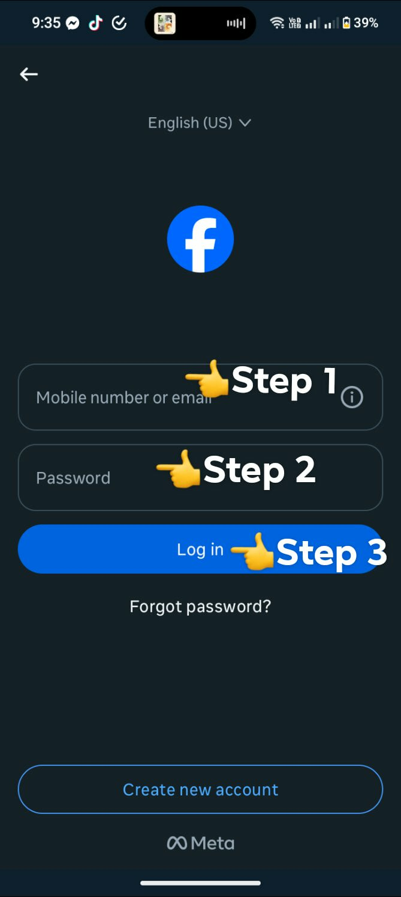

What do you want to do next?
"Anu it imo karuyag buhaton sunod?"
Try "Testingan" Information about app
"Impormasyon hit applikasyon" Return
"Balik"

What is FACEBOOK?
"Anu ba itun FACEBOOK?"
Facebook's history begins in 2003 as "Facemash," a Harvard University website for rating students'
attractiveness, created by Mark Zuckerberg. It quickly evolved into "thefacebook.com" in 2004, a social
networking site for Harvard students, and then expanded to other universities. By 2006, it opened to the
general public with a valid email address and age requirement. Facebook has since become a global social
media giant, acquiring other platforms like Instagram and WhatsApp, and facing various controversies
along the way.
An kasaysayan han Facebook nagtikang han 2003 sugad nga "Facemash," usa nga website ha Harvard
University para pagrate han kaanyag han mga estudyante, nga gintikangan ni Mark Zuckerberg. Dali ini nga
nagin "thefacebook.com" han 2004, usa nga social networking site para la anay han mga estudyante ha
Harvard, ngan pagkatapos nagpalapad ngadto ha iba nga unibersidad. Pag-abot han 2006, gin-abrihan ini
para ha publiko nga may balido nga email address ngan edad nga rekisito. Tikang hadto, an Facebook nagin
usa nga dako nga global social media nga kompaniya, nga nag-angkon hin iba nga mga plataporma sugad han
Instagram ngan WhatsApp, ngan nakasagupa hin iba-iba nga kontrobersiya ha iya dalagan.

GUIDE/STEPSGabay/Hakbang
How to Log in?Paano mag log in?
1: Put your email/number on the blank field.
Ibutang ha blanko an imo email o numero
2: Put your password on the next blank field.
Ibutang sa sunod nga blanko an imo
password
3: Click the Log In to get start.
Pinduta itun "Log in" para makag tikang